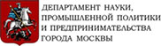

Партнеры
Webinarbox - cистема для создания и проведения продающих вебинаров На сегодняшний день это самая надежная в мире вебинар- платформа со встроенными маркетинговыми инструментами усиливающими ваши продажи.

СКБ Контур - компания-разработчик программного обеспечения с 1988 года. Мы работаем над тем, чтобы избавить бизнесменов от бумажной волокиты и вопросов со стороны контролирующих и налоговых органов.
Центральный Дом Предпринимателя (ЦДП) — это крупнейший в столице культурно-деловой центр, созданный с целью объединения предпринимателей города, продвижения предпринимательской инициативы, проведения мероприятий, направленных на поддержку малого и среднего бизнеса.
Большое правительство принципиально новая платформа социального партнерства общества и власти.Блоги участников инициативной группы, дискуссии по актуальным вопросам, опросы. Новости, мониторинг СМИ.

Extraпродающие сайты для тех, кто зарабатывает деньги знает им цену. Поддержка, развитие бизнеса и startup проектов. Сайты, landingpage, корпоративная идентификация - от визитки, до создания сайта любой сложности, 24/7/364 в любой точке Земли.
Supl.biz – электронная торговая площадка для малого и среднего бизнеса, которая упрощает процесс закупки товаров и услуг и помогает найти клиентов. Вместо того, чтобы часами просматривать сайты, прайс-листы и обзванивать компании, можно всего за 3 минуты бесплатно разместить заказ, и поставщики сами будут предлагать свои условия. С Supl.biz вы экономите на закупках 15-40% и получаете эффективный канал продаж.
НАС ПОДДЕРЖИВАЮТ
Департамента науки, промышленной политики и предпринимательства города Москвы
Департамент науки, промышленной политики и предпринимательства города Москвы является отраслевым органом исполнительной власти города Москвы, осуществляющим функции по разработке и реализации государственной политики города Москвы в сфере промышленной, научно-технической и инновационной деятельности, поддержки и развития предпринимательства, по формированию благоприятного инвестиционного климата, привлечению и сопровождению инвестиций в вышеуказанных сферах деятельности, развитию и определению направлений использования промышленных зон города Москвы, предоставлению государственных услуг.
Московская торгово-промышленная палата
Действенная и многофункциональная структура, способная реально поддерживать предпринимательство и защищать его интересы, готова принять в свои ряды новые организации, заинтересованные в развитии отечественной экономики, формировании благоприятных условий для укрепления позиций российского бизнеса.
Коворкинг «Lerner»
Первый антиофис в Москве для творческих людей. Это особое пространство для работы и развития. У нас собраны интереснейшие инструменты, и мы готовы ими делиться. Регулярные мастер-классы, Школы для развития бизнеса и руководителей, деловые игры, клубные мероприятия, коуч-сессии и презентации.
информационные партнёры
Aori.ru – автоматическая система управления интернет-рекламой для малого и среднего бизнеса; агрегатор, позволяющий запускать рекламу в поисковых системах и на партнерских сайтах Google, «Яндекс», Рамблер, Mail.Ru, а также в социальных сетях Facebook и «ВКонтакте». Система работает с бюджетами от 3000 рублей.
MarketingPeople - профессиональная социальная сеть для специалистов в маркетинге, рекламе и PR. Мы предоставляем вам широкие возможности для: повышения своего профессионального уровня; увеличения доходности вашей деятельности; того, чтобы быть в курсе всех трендов, новостей, получая доступ к материалам всех событий в сфере маркетинга. Цель бизнес-сообщества MarketingPeople — поднять и развить статус понятия «маркетолог». Площадка сообщества MarketingPeople создана под единый бренд, под которым объединены несколько направлений: образование, общение, консалтинг и разработка маркетинговых решений.Приходите. Будет интересно.
«Нетология» — это образовательный онлайн-центр по подготовке и дополнительному обучению специалистов в области интернет-бизнеса, маркетинга, электронной коммерции, веб-разработки и других направлений онлайн-индустрии.
Телеканал «Pro Бизнес» – источник информации для тех, кто создает бизнес, работает в бизнесе, хочет добиться добиться успеха и построить эффективный бизнес. В передачах телеканала смотрите: деловую информацию на злобу дня; практические рекомендации по основам рыночной экономики; обзоры российского рынка инвестиций, страхования и пр.; сюжеты о предпринимательском опыте соотечественников; интервью с представителями бизнес-элиты; советы экспертов и многое другое.
«Свой бизнес» — ведущее российское издание для увлечённых предпринимателей. Истории успеха, перспективные бизнес-идеи, и эффективные бизнес-технологии. Все материалы построены на конкретных примерах из деловой практики. Своим опытом в сфере менеджмента, маркетинга, финансов, внедрения IT-решений делятся успешные предприниматели. Статьи и интервью построены на фактах из практики компаний и их владельцев. Главные герои – владельцы успешных компаний. Главные темы – истории успеха, идеи для создания и развития бизнеса. Миссия – содействовать росту частного предпринимательства в России.
GreenfieldProject — стартовая площадка для высокотехнологичных стартап-проектов, общения потенциальных предпринимателей и людей, которым интересно работать в стартап-проектах. Основная задача GreenfieldProject — развитие культуры предпринимательства в России, увеличение количества и качества инновационных высокотехнологичных проектов и формирование нового поколения предпринимателей, готовых оценивать и идти на осознанный риск. Регулярные бесплатные рабочие встречи GreenfieldProject состоят из презентаций и обсуждения идей участников, а также мастер-классов и панельных дискуссий с экспертами. Участники GreenfieldProject имеют возможность потренироваться в презентации своих идей, в совместном обсуждении новых интересных проектов, а также пообщаться с привлеченными экспертами — успешными предпринимателями, менеджерами, технологическими специалистами.
Национальная премия "Бизнес-Успех" - всероссийский конкурс на звание лучших предпринимателей России.
Aori.ru – автоматическая система управления интернет-рекламой для малого и среднего бизнеса; агрегатор, позволяющий запускать рекламу в поисковых системах и на партнерских сайтах Google, «Яндекс», Рамблер, Mail.Ru, а также в социальных сетях Facebook и «ВКонтакте». Система работает с бюджетами от 3000 рублей.
Aori.ru – автоматическая система управления интернет-рекламой для малого и среднего бизнеса; агрегатор, позволяющий запускать рекламу в поисковых системах и на партнерских сайтах Google, «Яндекс», Рамблер, Mail.Ru, а также в социальных сетях Facebook и «ВКонтакте». Система работает с бюджетами от 3000 рублей.
Aori.ru – автоматическая система управления интернет-рекламой для малого и среднего бизнеса; агрегатор, позволяющий запускать рекламу в поисковых системах и на партнерских сайтах Google, «Яндекс», Рамблер, Mail.Ru, а также в социальных сетях Facebook и «ВКонтакте». Система работает с бюджетами от 3000 рублей.
Aori.ru – автоматическая система управления интернет-рекламой для малого и среднего бизнеса; агрегатор, позволяющий запускать рекламу в поисковых системах и на партнерских сайтах Google, «Яндекс», Рамблер, Mail.Ru, а также в социальных сетях Facebook и «ВКонтакте». Система работает с бюджетами от 3000 рублей.
Aori.ru – автоматическая система управления интернет-рекламой для малого и среднего бизнеса; агрегатор, позволяющий запускать рекламу в поисковых системах и на партнерских сайтах Google, «Яндекс», Рамблер, Mail.Ru, а также в социальных сетях Facebook и «ВКонтакте». Система работает с бюджетами от 3000 рублей.
Aori.ru – автоматическая система управления интернет-рекламой для малого и среднего бизнеса; агрегатор, позволяющий запускать рекламу в поисковых системах и на партнерских сайтах Google, «Яндекс», Рамблер, Mail.Ru, а также в социальных сетях Facebook и «ВКонтакте». Система работает с бюджетами от 3000 рублей.
Aori.ru – автоматическая система управления интернет-рекламой для малого и среднего бизнеса; агрегатор, позволяющий запускать рекламу в поисковых системах и на партнерских сайтах Google, «Яндекс», Рамблер, Mail.Ru, а также в социальных сетях Facebook и «ВКонтакте». Система работает с бюджетами от 3000 рублей.
Aori.ru – автоматическая система управления интернет-рекламой для малого и среднего бизнеса; агрегатор, позволяющий запускать рекламу в поисковых системах и на партнерских сайтах Google, «Яндекс», Рамблер, Mail.Ru, а также в социальных сетях Facebook и «ВКонтакте». Система работает с бюджетами от 3000 рублей.
Aori.ru – автоматическая система управления интернет-рекламой для малого и среднего бизнеса; агрегатор, позволяющий запускать рекламу в поисковых системах и на партнерских сайтах Google, «Яндекс», Рамблер, Mail.Ru, а также в социальных сетях Facebook и «ВКонтакте». Система работает с бюджетами от 3000 рублей.